Horóscopo de noviembre 2026 para los 12 signos: Escorpio, luna nueva y Superluna
Luna nueva en Escorpio, Mercurio y Venus directos, Sol en Sagitario y Superluna: la lectura de los 12 signos.
Lectura de 11 min
Día de Muertos y Samhain 2026: cómo hacer una ofrenda y un ritual para honrar a tus ancestros
Fechas, diferencias entre ambas tradiciones, cómo montar una ofrenda y un ritual sencillo para honrar a tus ancestros.
Lectura de 7 min
Números angelicales: significado del 111, 222, 333, 444, 555 y más
Qué significa ver 111, 222, 333, 444, 555 y otros números repetidos, y cómo interpretarlos.
Lectura de 4 min
Portal 11/11 de 2026: qué es, qué significa y un ritual sencillo para ese día
Qué es el portal 11/11, por qué el 11 es un número maestro y un ritual sencillo para ese día.
Lectura de 4 min
Horóscopo 2027: predicciones para los 12 signos y las fechas clave del año
Júpiter en Leo y Virgo, el gran eclipse del 2 de agosto y predicciones para cada signo.
Lectura de 6 min
¿Tienes una M en la palma de la mano? Esto significa según la quiromancia
Cómo saber si tienes la M en la palma, qué líneas la forman y qué significa.
Lectura de 4 min
Calendario lunar de noviembre 2026: Superluna del Castor, luna nueva en Escorpio y rituales
Luna nueva en Escorpio, Superluna del Castor, Leónidas y un ritual para cada fase.
Lectura de 4 min
Calendario lunar de octubre 2026: fases, Luna del Cazador y rituales para cada fase
Luna nueva del 10/10, Luna llena del Cazador, Oriónidas y un ritual sencillo para cada fase de la Luna.
Lectura de 8 min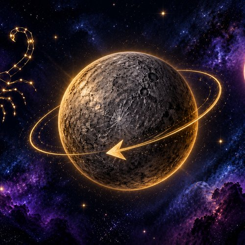
Mercurio retrógrado en Escorpio 2026: fechas, curiosidades y cómo te afecta
Del 24 de octubre al 13 de noviembre, y coincide con Venus retrógrado. 7 curiosidades y qué significa para tu signo.
Lectura de 7 min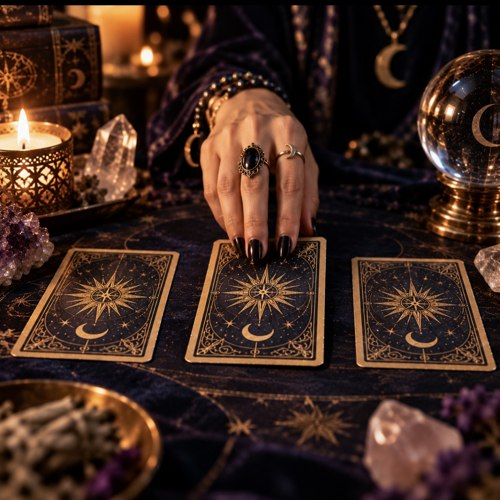
Cómo hacer una tirada de tarot de tres cartas: guía para principiantes
Aprende paso a paso a realizar la tirada de tarot más popular para empezar: pasado, presente y futuro.
Lectura de 8 min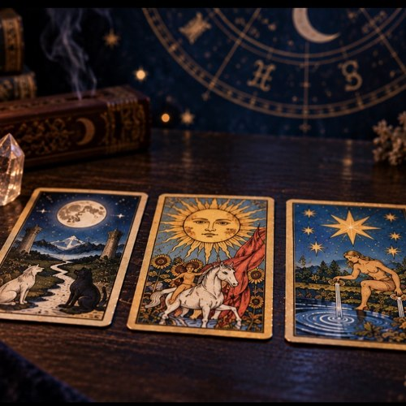
Los 22 Arcanos Mayores del Tarot y su significado
Guía completa de las 22 cartas de los Arcanos Mayores, desde El Loco hasta El Mundo.
Lectura de 10 min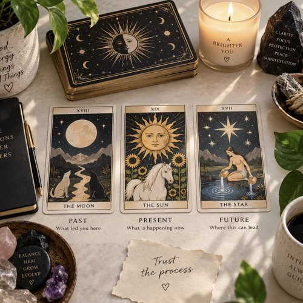
Tarot del amor: lo que las cartas revelan sobre tu vida sentimental
Las cartas del tarot más asociadas al amor y cómo interpretarlas en una lectura sentimental.
Lectura de 9 min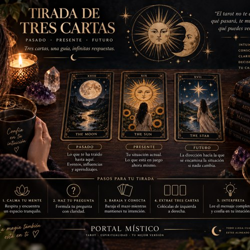
Cómo elegir y cuidar tu primera baraja de tarot
Consejos prácticos para escoger tu primer mazo de tarot y mantenerlo como una herramienta sagrada.
Lectura de 8 min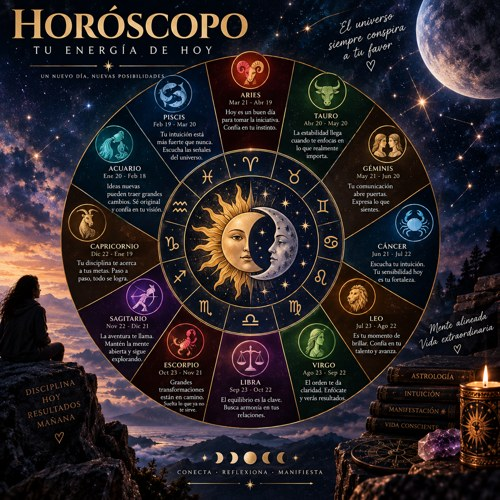
Horóscopo 2026: predicciones generales para los 12 signos del zodiaco
Un vistazo general a las energías astrológicas que marcarán a cada signo durante 2026.
Lectura de 11 min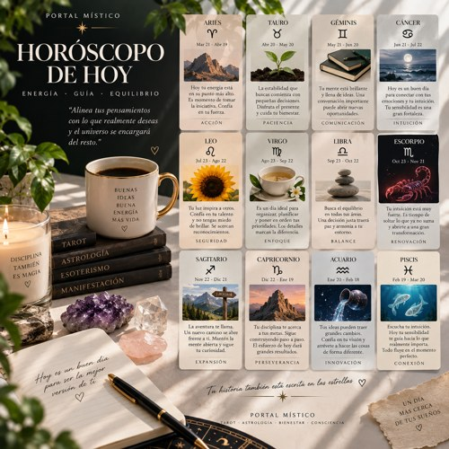
Compatibilidad de signos zodiacales: qué combinaciones funcionan mejor
Cómo se llevan entre sí los distintos signos del zodiaco según el elemento al que pertenecen.
Lectura de 9 min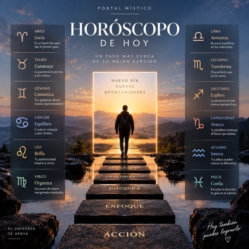
Los cuatro elementos del zodiaco: fuego, tierra, aire y agua
Qué caracteriza a cada uno de los cuatro elementos astrológicos y qué signos pertenecen a cada uno.
Lectura de 8 min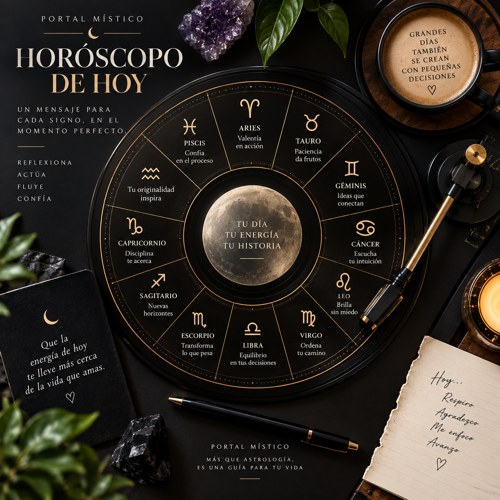
Qué es el ascendente y cómo calcularlo
El ascendente es la máscara con la que te presentas al mundo. Aprende qué significa y cómo saber el tuyo.
Lectura de 8 min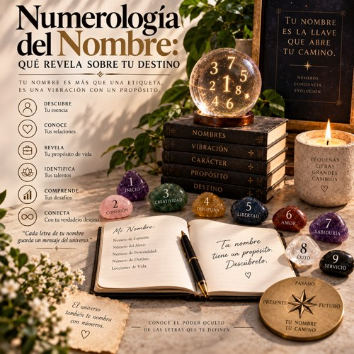
Numerología del nombre: qué revela sobre tu destino
Cómo se calcula el número de tu nombre en numerología y qué información aporta sobre tu personalidad.
Lectura de 6 min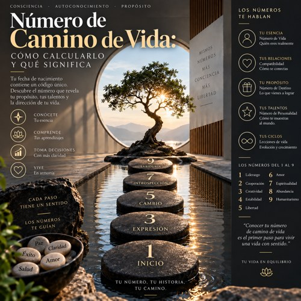
Número de camino de vida: cómo calcularlo y qué significa
El número más importante de la numerología: cómo obtenerlo a partir de tu fecha de nacimiento.
Lectura de 6 min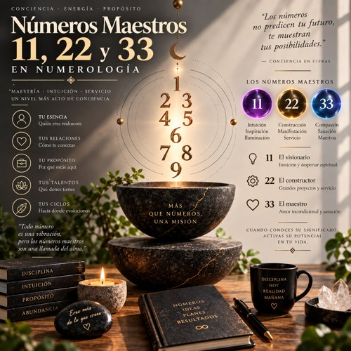
Números maestros 11, 22 y 33 en numerología
Por qué el 11, el 22 y el 33 se consideran números maestros y qué significan cuando aparecen en tu carta.
Lectura de 5 min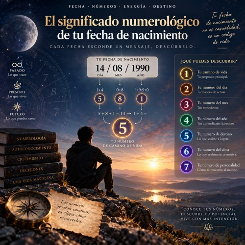
El significado numerológico de tu fecha de nacimiento
Cada componente de tu fecha de nacimiento —día, mes y año— aporta una capa distinta a tu perfil numerológico.
Lectura de 6 min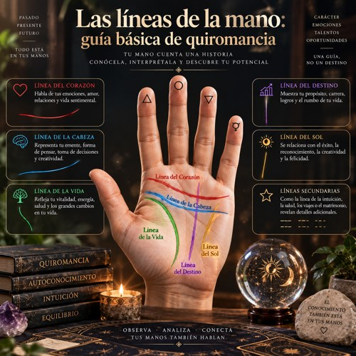
Las líneas de la mano: guía básica de quiromancia
Introducción a las tres líneas principales de la palma y lo que representan en la lectura de manos.
Lectura de 9 min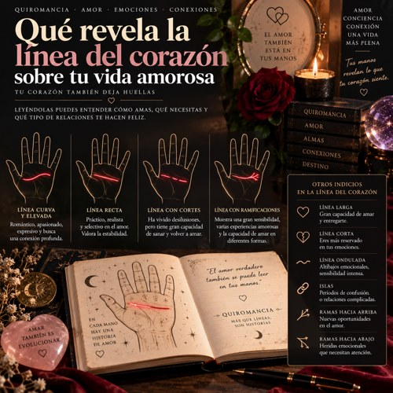
Qué revela la línea del corazón sobre tu vida amorosa
Cómo interpretar la forma, el largo y el punto de inicio de la línea del corazón en la palma de la mano.
Lectura de 8 min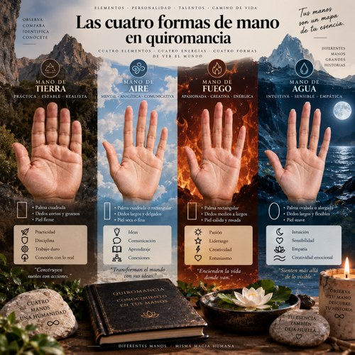
Las cuatro formas de mano en quiromancia
La quiromancia clasifica las manos en cuatro tipos elementales: fuego, tierra, aire y agua.
Lectura de 8 min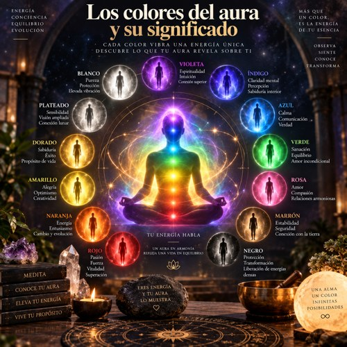
Los colores del aura y su significado
Guía de los colores más comunes del aura y qué revelan sobre el estado energético de una persona.
Lectura de 9 min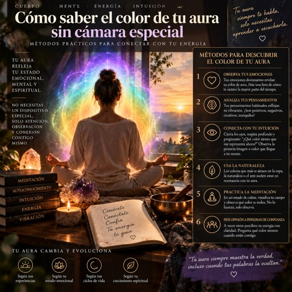
Cómo saber el color de tu aura sin cámara especial
Técnicas sencillas para percibir o intuir el color dominante de tu aura sin equipos costosos.
Lectura de 8 min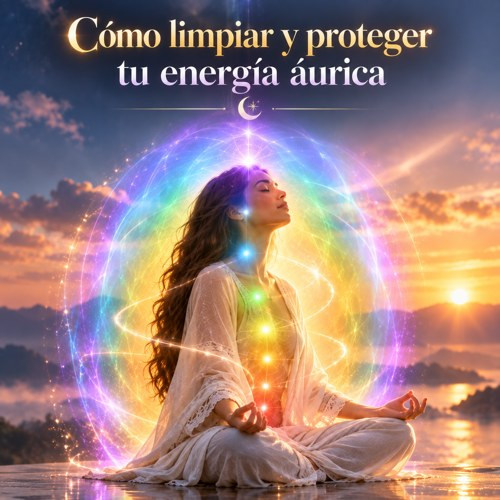
Cómo limpiar y proteger tu energía áurica
Prácticas sencillas para limpiar tu campo energético y protegerlo de influencias externas.
Lectura de 8 min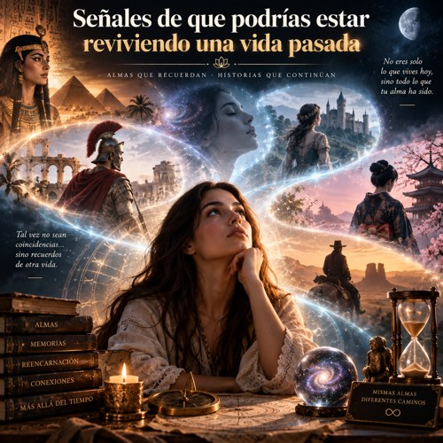
Señales de que podrías estar reviviendo una vida pasada
Indicios comunes —según el esoterismo— de que ciertos patrones actuales provienen de vidas anteriores.
Lectura de 9 min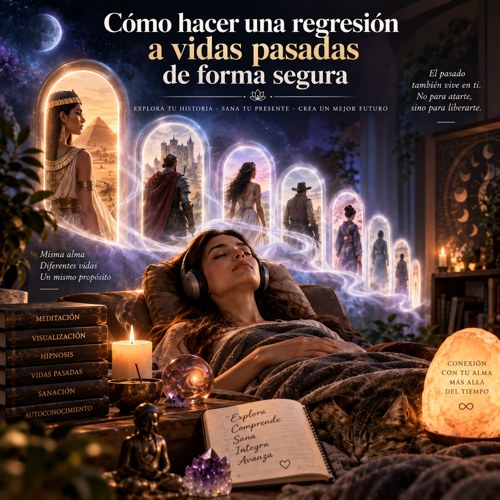
Cómo hacer una regresión a vidas pasadas de forma segura
Qué es una regresión a vidas pasadas, cómo se practica y qué precauciones conviene tomar.
Lectura de 9 min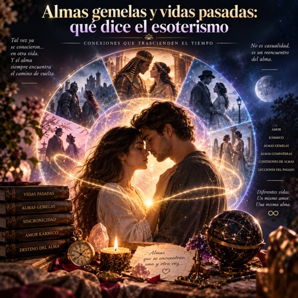
Almas gemelas y vidas pasadas: qué dice el esoterismo
La relación entre el concepto de almas gemelas y la creencia en vínculos forjados en encarnaciones anteriores.
Lectura de 8 min